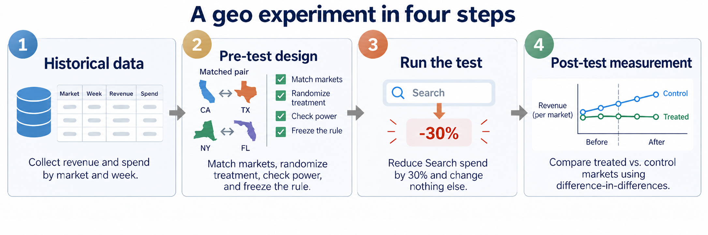
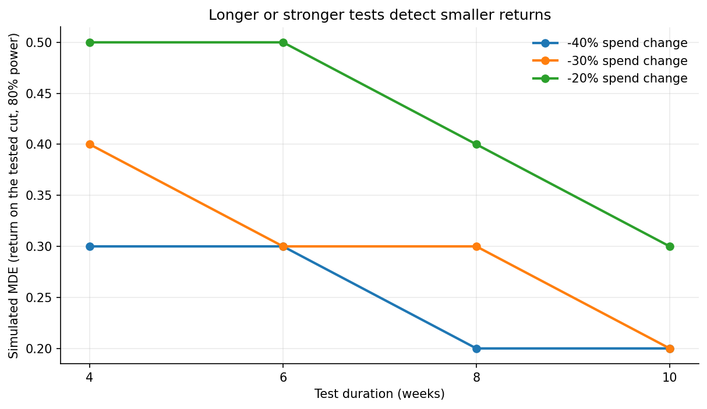

6.3 Incrementality Experiments
What Is Incrementality?
Section 6.2 ended with a recommendation the model couldn’t back up. The optimizer wants to pull $38.1 million out of Google Search, a 30% cut, all the way to the constraint floor. The guardrail blocks it: Search’s marginal ROAS interval runs from 0.3 to 8.3, too wide to act on. The reason is in the history: Search has run always-on at a nearly constant weekly budget for three years, which is exactly the case Section 6.2 warned about. The model has never seen Search spend move, so its estimate is mostly the prior. Cutting $38 million on an estimate like that is a bet, not a decision. So before we cut nationally, we need causal evidence precise enough to act on. How much revenue was the last 30% of Search spend actually buying?
That number is an incremental effect. Incrementality is the outcome that would not have happened without the advertising. If a campaign records $120,000 in sales but $100,000 would have occurred anyway, the incremental revenue is $20,000. Attribution describes which touchpoints receive credit for observed conversions; it has nothing to say about the $100,000. The MMM’s response curve aims at the same incremental contribution across spend levels, but it estimates it from observational variation, and when media moves with promotions and seasonal demand, that variation can’t separate the two. A more elaborate model doesn’t create the missing comparison. To get it, we have to change the data: run an experiment in which we control what changes, and where.
Choosing the Experimental Unit
The first design choice is who or what gets randomized. There are two families. A user-based conversion lift study randomizes eligible people: the platform withholds the campaign from a holdout group and compares conversion rates. A geo experiment randomizes markets: media changes for everyone in the test markets, and the outcome is whatever the business measures there. Figure 1 shows the two side by side.

| Design question | User-based lift | Geo experiment |
|---|---|---|
| Randomization unit | Eligible user | Market or region |
| Usually operated by | Ad platform | Brand and analyst |
| Primary outcome | Registered conversions | Aggregate business KPI |
| Main strength | Individual randomization | Offline and total-market lift |
| Main constraint | Identity, tracking, volume | Few units, spillovers, noise |
User-based lift is usually the cleaner design when it’s available: individual randomization, large samples, and a console that does the work. Its limit is scope. It measures registered conversions, among users the platform can identify, for the campaigns it randomized. That isn’t a defect. It’s the study’s estimand, the precise quantity it measures, and a user lift study isn’t inferior for having a narrow one. But offline sales, halo into other channels, and revenue in the company’s own books all sit outside it.
Our question is about total revenue in the company’s own books, and the decision is a budget cut, not a campaign setting. That points to geography. A geo experiment is platform-independent because the outcome comes from the revenue system, and it aggregates naturally to the geo-week structure the MMM uses, which is exactly what Section 6.4 will need. The rest of this chapter runs one.
The mechanics of user-based lift, such as intent-to-treat interpretation, holdout sizing, and platform designs like public-service-ad controls and ghost ads, are covered in References and Further Reading. This book doesn’t cover console setup; those details change faster than a book can.
The Geo Experiment in Four Steps

Figure 2 is the map for the rest of this chapter. We start with historical data: revenue and Search spend by market and week. From it we design the test: pick the KPI, select and pair markets, fix the spend change and duration, check that the design can detect what matters, and write down the decision rule. Then we run the test, which is the one step where the analyst mostly waits. Finally we measure: estimate the lift against a credible counterfactual, check that the estimate holds up, and make the decision we froze in step two. Each of the next four sections is one step.
Companion notebook: sec6.3_geo_experiment.ipynb runs the full experiment on a synthetic 40-market panel whose Search economics match the Section 6.2 model, with planted ground truth, so every estimate below can be checked against the truth.
View on GitHub
Step 1: Historical Data
Everything downstream is built from one table: one row per market per week, with revenue, Search spend, and any other local media that could move during the test. The panel here has 40 markets and 96 weeks of history before the test window. Two years is comfortable; one year is workable if the outcome isn’t strongly seasonal.
Three things to check before design starts. Revenue has to come from the company’s own system, at the geography the media can actually be controlled at; if Search campaigns can only be set by state, the state is your market, whatever the data offers. Spend has to be the spend you will really change, not a planned figure. And the history has to be clean of things that would confuse the counterfactual. A market that gained a distribution center last year isn’t a control for anything. Markets with known problems come out here, not later.
Output: an analysis-ready market-week panel.
Step 2: Pre-Test Design
Five decisions define the study, and all of them are made before any result exists.
- KPI. Revenue, from the company’s own books. That is what the CFO’s question is about and what the MMM models.
- Markets and assignment. Screen candidate markets on pre-period behavior, form matched pairs, randomize within each pair.
- Spend change. Cut Search by 30% in the test markets. That is the optimizer’s proposal, so the test measures the policy under consideration rather than a proxy for it.
- Duration and power. Eight weeks, chosen by simulation on the historical panel.
- Decision rule. Which result leads to which action, written down now.
The notebook freezes these choices in one configuration cell:
DESIGN = {
"seed": 20260888,
"channel": "Google Search",
"test_start": "2024-02-05",
"test_end": "2024-03-25",
"test_weeks": 8,
"n_pairs": 8,
"spend_multiplier": 0.70, # a 30% pull-back in test markets
"contribution_margin": 0.40, # sets the decision hurdle below
# ...plus `direction`, which records that this test cuts spend so the
# contrast is negative, and the power-simulation grid: durations, spend
# levels, candidate lifts, and the significance level.
}Why cut rather than add? A pull-back and a heavy-up both probe the response curve near today’s spend, but on a curved response they aren’t the same estimand. This test measures the average return on the block of spend between 70% and 100% of baseline, which is exactly the policy the optimizer proposed; a 25% heavy-up would measure the block above it. The other reason is cost, and the expected cost of an experiment comes from what you already believe about the answer. On the model’s pre-test belief, at a 40% margin, the pull-back nets a cost near $7,000 and the heavy-up near $28,000: cheap either way, because the model has Search sitting close to its break-even return. The pull-back is four times cheaper, but with numbers that small, cost is not what decides this. The estimand is. If the model is badly wrong and the truth sits well above the hurdle, the pull-back costs real revenue for eight weeks in eight markets. That risk is bounded, and the decision rule below has a branch for it.
Market selection and assignment
Use historical outcomes only. For each candidate market, the notebook measures correlation with the rest of the business, average revenue, and trend. It screens the 40 markets down to 16 strong candidates, sorts them by size, pairs neighbors, checks trend balance within each pair, and then flips a coin inside each pair to pick the test market. Screening reduces noise; randomization is what makes the comparison causal. Picking the test markets after looking at post-period outcomes would destroy that distinction, and so would picking them by hand because “those markets are typical.”
Do not put all the large markets in treatment to cover more revenue. A lopsided split turns ordinary seasonal movement into an apparent effect. A stronger production workflow evaluates many candidate sets: remove markets that can’t supply a stable counterfactual, simulate power for each feasible assignment, then choose.
Spillover is a market-selection problem; no estimator fixes it afterward. Commuters shop in one market and live in another, local television crosses borders, and a national promotion changes demand everywhere. Use non-overlapping units where the media intervention is actually controllable, and keep other local activity stable across the selected markets. If control markets receive part of the treatment, the experiment biases toward zero without announcing it in any fit statistic.
Power and MDE by simulation
Before committing to the test, ask whether this panel could detect the effect the business cares about. The notebook picks historical pseudo-launch dates, subtracts the revenue a candidate ROAS would lose on the planned cut, reruns the same clustered estimator, and counts how often the effect is detected. Repeating this across durations and cut sizes produces a simulated minimum detectable effect, or MDE.

In Figure 3, a 30% cut over eight weeks detects marginal ROAS of about 0.30 and above. Four weeks needs 0.40; a 40% cut reaches 0.30 in four weeks; a 20% cut over eight weeks only gets to 0.40. Larger cuts have more power because the spend contrast is larger in dollars. These numbers belong to this panel. A 20-50% spend change over four to eight weeks is a common starting point, not a rule. Simulating on your own history is the rule.
Decision rule and design freeze
The MDE says what the test can distinguish from zero. That isn’t the question the CFO is asking. The budget question is whether Search earns enough to keep its money, and “enough” has a number: the marginal ROAS at which an extra dollar of spend breaks even. With a contribution margin of \(m\), break-even is \(1/m\). At a 40% margin, a Search dollar has to return $2.50 in revenue to pay for itself. That is the hurdle, and it’s a business input, not a statistical one.
It is the hurdle for one particular decision: whether this block of spend should stay in the media budget at all. If the total budget is fixed and the question is whether the dollar should move to Meta or OOH instead, the bar is the marginal return those channels offer, and only a model that sees all five channels can estimate it. This chapter asks the first question. Does the last 30% of Search pay for itself? A block that fails that test fails every alternative use too. Where the released budget should go is the comparison in Section 6.4.
So the rule, written before launch: if the 95% confidence interval for marginal ROAS sits entirely above 2.50, keep the budget; if it sits entirely below, cut as the optimizer proposed; if it straddles 2.50, hold the national plan and design a follow-up test; extending this one after seeing its result would turn it into a different test. The interval clustered on markets is the primary decision statistic; the randomization test in step four and the pair-clustered interval below are pre-specified robustness checks, not second votes. Notice the distance between the two numbers. The design detects effects down to about 0.30, and the hurdle is 2.50. For the decision at hand the test has power to spare: with a standard error near 0.075, any true marginal ROAS below roughly 2.3 produces a “cut” verdict. The notebook says the same thing in the units of the decision, by simulating the verdict rather than the p-value:
| True incremental ROAS | P(cut) | P(hold) | P(keep) |
|---|---|---|---|
| 0.2 | 1.00 | 0.00 | 0.00 |
| 1.0 | 1.00 | 0.00 | 0.00 |
| 2.5 | 0.00 | 1.00 | 0.00 |
| 3.0 | 0.00 | 0.83 | 0.17 |
Whether the effect can be distinguished from zero is a separate question, and we will see that it can have a different answer.
Freeze everything now: the market list, the dates, the spend plan, the estimator, the calendar exclusions, the hurdle, the random seed. Don’t let a major event such as Black Friday straddle a test boundary. Design discipline is easiest while nobody knows which choice would improve the answer.
Output: a frozen test plan.
Step 3: Run the Geo Test
This is the step where the analyst has the least to do and the most to protect. Search spend drops 30% in the eight test markets on the launch date and stays there; control markets run business as usual. Nothing else changes locally: no market-level promotions, no other media shifted in to compensate, no “let’s also try something” in a control market. Record the spend that was actually delivered, by market and week, because the denominator in step four is the spend the experiment removed, not the spend that was planned. Don’t read the results weekly and don’t stop early; an eight-week test read at week three is a different, noisier test with a higher false-positive rate. If Search spend in a test market doesn’t fall as planned, that is noncompliance, not an exclusion: keep the market in the primary analysis as assigned, and report the delivered spend contrast next to the planned one. Drop a pair only for a reason fixed in advance, such as lost outcome data, and write it down before you look at the result.
Output: a delivery and compliance log.
Step 4: Post-Test Measurement
Here is the first number a stakeholder will compute, whether or not you do: revenue in the test markets during the test, versus the eight weeks before it. In the notebook that comparison gives a marginal ROAS of -0.87. Search spend went down and revenue went up, so cutting Search apparently increased sales. Every ad manager has heard this argument, usually followed by “so let’s cut more.” It’s wrong here because revenue was rising into the test window in every market, control markets included; the before/after comparison credits the cut with the season. This is why we chose control markets in step two.
The estimator follows the assignment mechanism, the same principle as in Section 3.3. Randomization within matched pairs is the design; paired Difference-in-Differences is the estimator that matches it. The basic interaction is:
model = smf.ols("revenue ~ treat * post", data=analysis).fit(
cov_type="cluster",
cov_kwds={"groups": analysis["geo"]},
)The notebook’s version replaces the treat and post main effects with a fixed effect for each market and a separate test-period term for each pair, so one pair’s local shock isn’t read as lift. The treat:post coefficient is incremental revenue per treated market-week; here it’s negative, because the test markets lost revenue relative to their pairs. Dividing its total by the spend the experiment removed gives marginal ROAS. Numerator and denominator are both negative, and their ratio is the quantity we want: revenue lost per dollar not spent. A positive ROAS means the channel was generating revenue, whichever direction the test moved spend.
The design-consistent estimate is 0.200, with SE 0.075 and 95% CI [0.040, 0.361]. With 16 market clusters the interval uses the t distribution rather than 1.96. It recovers the planted truth of 0.200. Each Search dollar removed had been buying about twenty cents of revenue.
That denominator deserves one more sentence. It must be the spend the experiment changed, in these markets, on these dates. Dividing by all historical Search spend, or by the national budget, turns a correct causal revenue estimate into the wrong ROAS.
Does the result hold up?
One estimate from one estimator is a claim. Three checks make it a result.
First, the pre-period. The event-study chart in the notebook centers each pair on the week before launch; pre-period differences fluctuate around zero rather than drifting. If they drifted, the pairs weren’t parallel, and the DiD would be measuring the drift.
Second, an alternative counterfactual. A synthetic control aggregates the eight test markets and builds a weighted blend of untreated donors, with non-negative weights that sum to one and minimize pre-period error. A close pre-period fit is the admission ticket; if the synthetic series can’t reproduce the treated history, its post-period gap means nothing. Here it fits, and the synthetic-control estimate is 0.186, close to DiD and to the truth. The two estimators compress the untreated information differently, so their agreement is informative. It is not a license to average methods until the preferred number appears.

Third, placebos. An in-space placebo asks what the analysis would report under assignments that never happened. With eight pairs, swapping roles inside each pair gives \(2^8 = 256\) possible assignments, few enough to enumerate. Their distribution is centered at zero by construction, and 11.7% of them produce an estimate at least as extreme as the observed 0.200. In-time placebos move the same eight-week window through earlier history; their mean is 0.053, with fake effects on both sides of zero rather than a repeated lift at every date.

The clustered-t interval excludes zero. The exact randomization test puts 11.7% of placebo assignments beyond the observed estimate. Neither is a computation error. The t interval is a large-sample approximation applied to 16 clusters; the enumeration is the design’s own reference distribution; and a borderline result can land on opposite sides of an arbitrary cutoff. This is also what the power analysis said would happen. A design with an MDE near 0.30 reads a true 0.20 as supportive evidence about zero, not a verdict. It’s why the next section decides on the hurdle rather than on significance, and why Section 6.4 carries the estimate and its uncertainty into the model together.
Because assignment was randomized, the in-space placebo distribution is design-based inference. In a non-randomized matched-market study, run the same pre-fit, event-study, synthetic-control, and placebo checks, but don’t borrow the language of randomization. The causal claim then rests on the synthetic counterfactual and on the argument that no unmeasured shock separated the chosen markets. Meta’s GeoLift and Google’s CausalImpact are built for that setting; they are different estimators, not extra votes, and References and Further Reading covers when to reach for which.
Output: an estimate, its checks, and the verdict.
From Lift to Decision
Now apply the rule we froze. The hurdle was 2.50. The interval is [0.040, 0.361], and its upper bound is less than a sixth of the hurdle. The rule says cut. Each dollar removed was buying twenty cents of revenue, eight cents of contribution at a 40% margin, and there is no reading of the uncertainty under which that dollar pays for itself.
One more number belongs in the handoff, because the next section turns it into a prior. Assignment was eight coin flips, one per matched pair, but the estimator clusters on the sixteen markets. Cluster on the pairs instead and the point estimate is unchanged at 0.200 while the standard error widens from 0.075 to 0.110, and the 95% interval runs [-0.060, 0.461] rather than [0.040, 0.361]. The verdict is the same either way, because 2.50 is far above both. But a prior built on the narrower of two defensible widths is a choice, not a fact, so both travel to Section 6.4 and the calibration is run at each.
Notice what the decision did not depend on. The randomization test couldn’t reject zero at 5%. Run on “was it significant,” the meeting ends in an argument about p-values and no decision. Run on the hurdle, the same numbers give a clear answer, because the distance from 0.36 to 2.50 is large and the distance from 0.04 to zero was never the question. A test can fail to distinguish an effect from zero and still settle a budget.
The test also paid for itself, on short-run contribution and before anything outside the eight-week window. It removed $421,906 of Search spend from the test markets and, on the estimate, gave up about $84,000 of revenue, roughly $34,000 of contribution. Step two priced that design on the model’s belief that a Search dollar was buying $2.54 of revenue. It was buying twenty cents, so the test cost about a tenth of what the model expected. That was the first sign that the model, and not only its interval, needed fixing.
What we know is precise and narrow: the effect of this 30% cut, in these markets, over this eight-week window. It is a policy effect at one operating point on the response curve, not the channel’s eternal ROAS. Preserve that scope in the handoff. In a live test the delivered spend contrast rarely equals the plan, and the delivered figure is the one that belongs in this table; here the two coincide because the panel is synthetic.
| Evidence field | Frozen value |
|---|---|
| Channel | Google Search |
| Design | 8 randomized matched pairs |
| Dates | 2024-02-05 to 2024-03-25 |
| Baseline spend, test markets | $1,406,355 |
| Spend removed | $421,906 |
| Incremental ROAS, 30% block | 0.200 |
| Standard error (clustered on markets) | 0.075 |
| Standard error (clustered on pairs) | 0.110 |
| 95% CI (clustered t) | [0.040, 0.361] |
| Randomization p | 0.117 |
| Tested markets’ share of national Search spend | 19.9% |
| Estimand | Revenue effect of a 30% cut in selected markets over 8 weeks |
The evidence supports the 30% cut in the tested operating range. Rolling it out nationally assumes the other 32 markets behave like these eight, so it should go out under the same guardrail, with delivered spend and revenue tracked against this prediction. That is the immediate decision. But one experiment measured one point on one channel’s curve, and the model in Section 6.2 sets budgets across five. Section 6.4 asks how much this causal evidence should change that model, and whether it changes what the model recommends. If the model and the experiment still disagree afterward, Section 6.5 is the protocol.
Key Takeaways
- Incrementality is the outcome that would not have happened without the ad. Experiments make that counterfactual defensible through assignment; a naive before/after can get the sign wrong.
- Choose the experimental unit before the estimator. User holdouts suit platform-scoped questions; geo tests suit total revenue, offline, and cross-channel outcomes.
- Design before results. Simulate power on your own history, and write the decision rule down. The MDE says what you can detect; the hurdle says what matters.
- Let assignment determine analysis. Paired DiD is the primary estimator here; synthetic control and placebos challenge it rather than replace it.
- Hand off the estimand, not just the ROAS. Preserve the channel, dates, spend contrast, uncertainty, and scope before calibration.